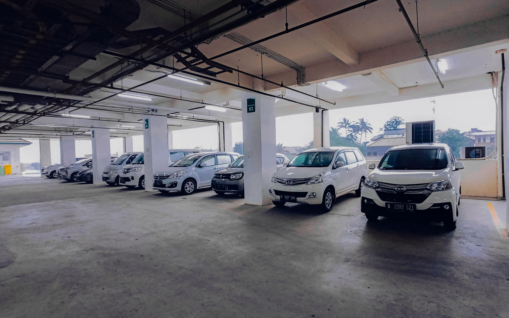
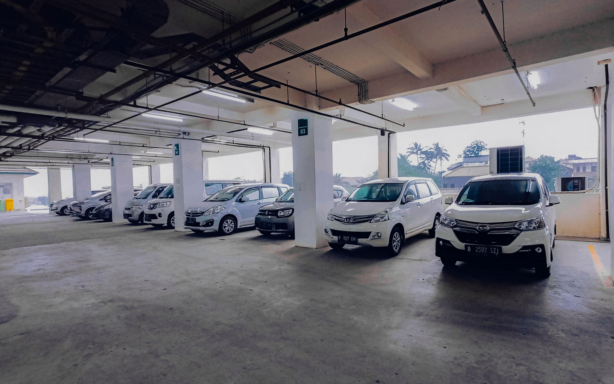

Selamat Datang di Rumah Sakit Harapan Bunda
Kesehatan Anda adalah prioritas kami. Kami menghadirkan pelayanan kesehatan unggulan dilengkapi dengan teknologi medis modern dan layanan pelayanan terpadu melalui rawat jalan, rawat inap, dan IGD 24 jam dengan mengutamakan keselamatan pasien, keramahan pelayanan, serta kenyamanan selama perawatan.


 
